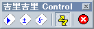

コントローラについて
コントローラは、実行中に Shift + F1 を押すことにより表示することができます。
コントローラでは、各デバッグ支援ウィンドウを開いたり、イベント発生の停止や TJS コンテキストのダンプ、メッセージマップファイルの作成、システムの強制終了をすることができます。
画面の説明

スクリプトエディタ
スクリプトエディタ
を開きます。
監視式
監視式
を開きます。
コンソール
コンソール
を開きます。
イベント発生
イベントの発生を制御します。押し込まれた状態ではシステムにイベントが発生し、押し込まれてない状態ではイベントは発生しません。吉里吉里は基本的にイベント駆動型のプログラミングモデルですので、イベントが発生しない状態ではプログラムが停止することになります。例外がどこにも捕捉されなかった場合、自動的にイベントは発生しなくなります。
このボタンは
System.eventDisabled
プロパティと連動しています。
TJS コンテキストのダンプ (コンテキストメニュー内)
TJS2 スクリプトエンジンが保持している各コンテキストのダンプ ( 主に逆アセンブル ) がファイルに出力されます。
Scripts.dump
メソッドと同様の動作をします。
メッセージマップファイルの作成 (コンテキストメニュー内)
吉里吉里に内蔵されている各メッセージのリストと、それに対応するメッセージの現在の設定を出力します。このファイルは吉里吉里本体と同じ場所に置くことで、吉里吉里の起動時に自動的に読み込ませてメッセージの再設定を行えるものです。デフォルトの名前は msgmap.tjs になります。
スクリプトエンジンの再起動 (コンテキストメニュー内)
TJS2スクリプトエンジンを再起動します。これによりTJS2が初期化されますが、これによりシステム全体や内部状態が再起動するわけではありません。場合によっては再起動の際にエラーが発生します。
プログラムの強制終了
プログラムを強制的に終了します。